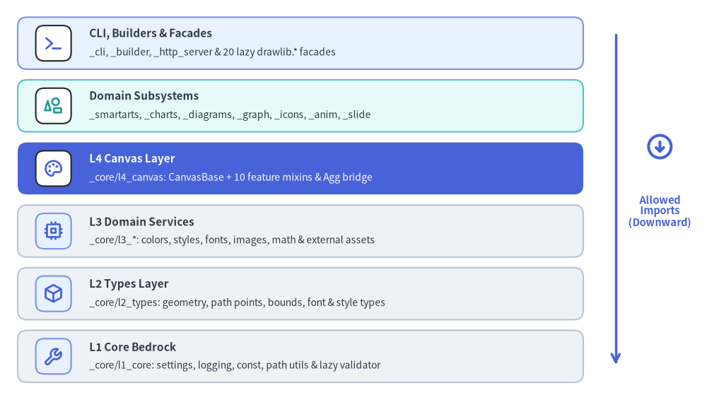
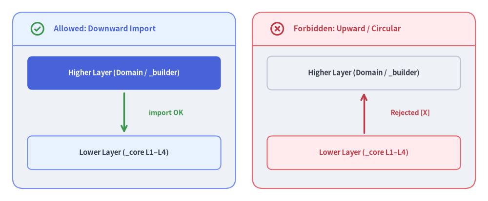

Layer Hierarchy & Architectural Rules
A full-featured illustration and document compiler combines geometry math, font metrics, raster image pipelines, stateful Matplotlib rendering, auto-layout solvers, and multi-format exporters. Without strict architectural boundaries, cross-cutting imports quickly degrade into circular dependencies and slow startup cascades.
To preserve modularity and testability, Drawlib enforces a strict Unidirectional Layered Architecture from top-level CLI and builders down to l1_core.

Source Code
from drawlib.canvas import save, setup
from drawlib.icons import phosphor
from drawlib.lines import line
from drawlib.smartarts import CardList
from drawlib.styles import Styles
from drawlib.text import text
setup(width=120, height=68)
stack = CardList(
style=Styles.Neutral,
text_style=Styles.DarkBold.patch(text_size=11.0),
description_style=Styles.Dark.patch(text_size=10.0),
badge_shape="rounded_rect",
badge_style=Styles.PrimaryNeutral,
icon_style=Styles.PrimaryBold,
direction="vertical",
spacing=1.8,
)
stack.add(
"CLI, Builders & Facades",
"_cli, _builder, _http_server & 20 lazy drawlib.* facades",
icon=phosphor.terminal,
style=Styles.PrimaryNeutral,
badge_style=Styles.White,
)
stack.add(
"Domain Subsystems",
"_smartarts, _charts, _diagrams, _graph, _icons, _anim, _slide",
icon=phosphor.shapes,
style=Styles.SecondaryNeutral,
badge_style=Styles.White,
icon_style=Styles.SecondaryBold,
)
stack.add(
"L4 Canvas Layer",
"_core/l4_canvas: CanvasBase + 10 feature mixins & Agg bridge",
icon=phosphor.palette,
style=Styles.PrimaryFlat,
text_style=Styles.WhiteBold.patch(text_size=11.0),
description_style=Styles.White.patch(text_size=10.0),
badge_style=Styles.White,
icon_style=Styles.PrimaryBold,
)
stack.add(
"L3 Domain Services",
"_core/l3_*: colors, styles, fonts, images, math & external assets",
icon=phosphor.cpu,
style=Styles.Neutral,
)
stack.add(
"L2 Types Layer",
"_core/l2_types: geometry, path points, bounds, font & style types",
icon=phosphor.cube,
style=Styles.Neutral,
)
stack.add(
"L1 Core Bedrock",
"_core/l1_core: settings, logging, const, path utils & lazy validator",
icon=phosphor.wrench,
style=Styles.Neutral,
)
stack.draw(xy=(3.0, 3.0), width=96.0, height=62.0)
# Strictly downward Allowed Imports indicator on the right
line((104.5, 62.0), (104.5, 6.0), arrow_head="->", style=Styles.PrimaryBold)
phosphor.arrow_circle_down((112.0, 43.0), width=5.0, style=Styles.PrimaryBold)
text(
(112.0, 32.0),
"Allowed\nImports\n(Downward)",
style=Styles.PrimaryBold.patch(text_size=10.5),
)
save()
1. Concept: Unidirectional Downward Dependency Law
Drawlib's package graph obeys a single non-negotiable invariant:
The Layer Dependency Law:
Higher-level layers may import symbols from lower-level layers, whereas lower-level layers must never import symbols from higher-level layers or form lateral import cycles.
Enforcing strictly downward imports guarantees:
- Zero Circular Imports: Every package loads in deterministic topological order with zero import deadlocks.
- Fast Isolated Unit Testing:
l1_core,l2_types, andl3_mathexecute in milliseconds without initializing Matplotlib figures, font registries, or browser processes. - Clean Backend Encapsulation: Matplotlib
ArtistandAxesobjects remain confined to_core/l4_canvas, keeping domain models (_smartarts,_diagrams,_graph) pure and composable.
2. Positioning: Six-Tier Layer & Domain Matrix
2.1. Horizontal Architectural Tiers
| Tier (Top → Bottom) | Package Path | Primary Responsibility | Allowed Dependencies |
|---|---|---|---|
| 6. CLI, Builders & Facades | _cli/, _builder/, _http_server/, src/drawlib/*.py |
Typer CLI, Markdown/HTML/PDF/Office compilers, preview server, and 20 lazy user-facing facades. | Domain Subsystems, _core L1–L4 |
| 5. Domain Subsystems | src/drawlib/_*/ |
High-level visual components, icon suites, preset palettes, graph solvers, animations, and slides. | Lower/peer domain helpers, _core L1–L4 |
| 4. L4 Canvas | _core/l4_canvas/ |
Singleton Canvas (CanvasBase + 10 cooperative mixins), transform stack, and Matplotlib Agg bridge. |
l3_*, l2_types, l1_core |
| 3. L3 Domain Services | _core/l3_*/ |
Color models, guarded Style schema, font catalog, Dimage wrapper, 2D routing math, and asset manifests. |
l2_types, l1_core |
| 2. L2 Value Types | _core/l2_types/ |
Coordinate/path aliases, constrained numeric types, font/file annotations, and style/shape literal types. | l1_core & stdlib/Pydantic types |
| 1. L1 Core Bedrock | _core/l1_core/ |
Runtime drawlib_settings, logger, path/stack inspection, constants, and lazy @validate_call. |
Zero internal Drawlib imports |
2.2. Complete Domain Subsystem Inventory
| Internal Package | Public Facade | Architectural Role |
|---|---|---|
_icons/ |
drawlib.icons |
34 standardized icon suites (phosphor vector font + gcp, aws, azure, 15 brand & 15 original_* suites). |
_preset_colors/ |
drawlib.preset_colors, styles.Colors |
Curated theme color tokens (DefaultColors, GoogleColors, MonochromeColors, CssColors). |
_preset_styles/ |
drawlib.preset_styles, styles.Styles |
Semantic Style presets enforcing contrast and neutral/accent hierarchy across themes. |
_smartarts/ |
drawlib.smartarts |
18 structured layout components (ChevronProcess, CardList, GridLayout, Table, TreeNode, Panel, etc.). |
_charts/ |
drawlib.charts |
9 quantitative data visualization charts (BarChart, LineChart, AreaChart, PieChart, GanttChart, etc.). |
_diagrams/ |
drawlib.diagrams |
6 software engineering diagram engines (architecture, flow, sequence, state, class_diagram, er). |
_graph/ |
drawlib.graph |
5 declarative topology coordinate solvers (ArchitectureGraph, LayerGraph, TreeGraph, RadialGraph, GridGraph). |
_anim/ |
drawlib.anim |
Multi-frame Animation timeline recorder, easing curves, and lossless WebP/APNG encoder. |
_slide/ |
drawlib.slide |
16:9 presentation Markdown parser (::: block, ::: note), responsive HTML deck compiler, and .pptx DOM bridge. |
_templates/ |
drawlib init (_cli) |
Starter project scaffolds (images, doc, site, slide) with drawlib.toml, styles.py, and template.html. |

Source Code
from drawlib.canvas import save, setup
from drawlib.icons import phosphor
from drawlib.lines import line
from drawlib.shapes import rectangle
from drawlib.smartarts import Panel
from drawlib.styles import Styles
from drawlib.text import text
setup(width=116, height=48)
# Left Panel: Allowed Downward Import (Higher on TOP -> Lower on BOTTOM)
left_panel = Panel(
"Allowed: Downward Import",
style=Styles.Neutral,
header_style=Styles.PrimaryNeutral,
text_style=Styles.PrimaryBold.patch(text_size=11.0),
icon=phosphor.check_circle,
icon_style=Styles.SuccessBold,
header_height=8.0,
)
left_panel.draw(xy=(3.0, 3.0), width=53.0, height=42.0)
rectangle(
(29.5, 30.5),
width=46.0,
height=8.0,
style=Styles.PrimaryFlat.patch(shape_r=1.2),
text="Higher Layer (Domain / _builder)",
text_style=Styles.WhiteBold.patch(text_size=10.5),
)
line((29.5, 25.8), (29.5, 16.2), arrow_head="->", style=Styles.SuccessBold)
text((39.5, 21.0), "import OK", style=Styles.SuccessBold.patch(text_size=10.0))
rectangle(
(29.5, 11.5),
width=46.0,
height=8.0,
style=Styles.PrimaryNeutral.patch(shape_r=1.2),
text="Lower Layer (_core L1–L4)",
text_style=Styles.DarkBold.patch(text_size=10.5),
)
# Right Panel: Forbidden Upward Import (Higher on TOP, Lower on BOTTOM, UPWARD arrow!)
right_panel = Panel(
"Forbidden: Upward / Circular",
style=Styles.Neutral,
header_style=Styles.DangerNeutral,
text_style=Styles.DangerBold.patch(text_size=11.0),
icon=phosphor.x_circle,
icon_style=Styles.DangerBold,
header_height=8.0,
)
right_panel.draw(xy=(60.0, 3.0), width=53.0, height=42.0)
rectangle(
(86.5, 30.5),
width=46.0,
height=8.0,
style=Styles.Neutral.patch(shape_r=1.2),
text="Higher Layer (Domain / _builder)",
text_style=Styles.DarkBold.patch(text_size=10.5),
)
line((86.5, 16.2), (86.5, 25.8), arrow_head="->", style=Styles.DangerBold)
text((97.5, 21.0), "Rejected [X]", style=Styles.DangerBold.patch(text_size=10.0))
rectangle(
(86.5, 11.5),
width=46.0,
height=8.0,
style=Styles.DangerNeutral.patch(shape_r=1.2),
text="Lower Layer (_core L1–L4)",
text_style=Styles.DangerBold.patch(text_size=10.5),
)
save()
3. Details: Core Layer Isolation (l1_core – l4_canvas)
3.1. Layer 1 (_core/l1_core) — Zero-Internal-Dependency Bedrock
l1_core sits at the root of the dependency graph and imports zero internal Drawlib modules:
- Stdlib-Only Import Path:
_const.py(LIB_NAME,LIB_VERSION, asset directories),_logging.py(logger),_path_utils.py(get_script_path(),get_script_relative_path(),ensure_cache_dir_ignores()), and_settings.py(drawlib_settingssingleton) rely strictly on the Python standard library at import time. - Lazy Call Validation (
_validator.py): Defines Drawlib's@validate_calldecorator wrappingpydantic.validate_call. Instead of compiling Pydantic validation schemas eagerly when modules are imported,_validator.pydefers schema construction until a function's first runtime call while preserving exactParamSpec/TypeVarstatic type signatures.
3.2. Layer 2 (_core/l2_types) — Value Primitives & Type Constraints
l2_types defines lightweight type aliases, Pydantic Annotated bounds, and literal unions across seven submodules without touching rendering state:
_geometry.py:Coordinate = tuple[float, float],Coordinates = list[Coordinate],Bezier2,Bezier3,PathPoint = Coordinate | Bezier2 | Bezier3, andPathPoints = list[PathPoint]._primitive.py: Guarded numeric bounds (PosInt,PosFloat,NegInt,NegFloat,Ratioin $[0.0, 1.0]$,NumVertex)._color.py&_font.py:RGBChannel,Alpha,ColorRGB,ColorRGBA, plusFont,FontBase,FontFile,FontMetadata, andFontResource._image.py&_path.py:ImageFormat,ImageQuality,ImageResample,ImageZoom,FilePath, andExistingFilePath._style.py:Angle(modulo $360^\circ$),Angle90,ArrowHead,Bend,HAlign,VAlign,LineStyle,ShapeRadius,Size, and shape variant literals (BraceDirection,CloudVariant,FaceVariant,ShieldVariant, etc.).
3.3. Layer 3 (_core/l3_*) — Specialized Domain Services
Layer 3 modules implement stateless and value-object domain engines over l2_types:
l3_colors: ImmutableColor(BaseModel),ColorType,BaseColors, andColorUtilsRGBA conversion/interpolation.l3_styles: GuardedStyle(BaseModel)withsupports: frozenset[SupportType]validation andBaseStylesmetaclass token inheritance.l3_fonts: Bundled/downloadable TrueType & OpenType font resolution and glyph metric helpers.l3_images: FluentDimagePillow wrapper for immutable resize, crop, alpha tinting, and rotation.l3_math: Vectorized 2D rotation/bounding geometry (_geometry.py) and Manhattan orthogonal connector routing (_routing.py).l3_external: Release asset archive definitions (ReleaseAssetPackage,AssetManifest) and SHA-256 verification.
3.4. Layer 4 (_core/l4_canvas/_canvas.py) — Cooperative Mixin Canvas
l4_canvas assembles the singleton canvas = Canvas() from CanvasBase plus 10 feature mixin classes:
- 3 Core Feature Mixins:
CanvasLineFeature,CanvasTextFeature, andCanvasImageFeature. - 7 Shape Feature Mixins:
CanvasShapeFeatureaggregating 6 shape category mixins (CanvasShapeBasicFeature,CanvasShapePolygonFeature,CanvasShapeArrowFeature,CanvasShapeContainerFeature,CanvasShapeBadgeFeature,CanvasShapeSymbolFeature). - Public
drawlib.canvasExports: Re-exportscanvas,clear,get_dimage,save,setup, andshow. Spatial coordinate frames are scoped via thewith canvas.transform(origin, scale, translate):context manager method on thecanvassingleton.
3.5. Static Verification via ./dcli
Architectural hygiene, type boundaries, and @validate_call docstring signatures are continuously verified via ./dcli:
./dcli code-check all # Runs Ruff lint/format, Ty static type checker, and docstring checks
Continue to Canvas & Geometry to examine the Cartesian coordinate system, 4-part anchor rules, and the L4 Canvas MRO in detail.